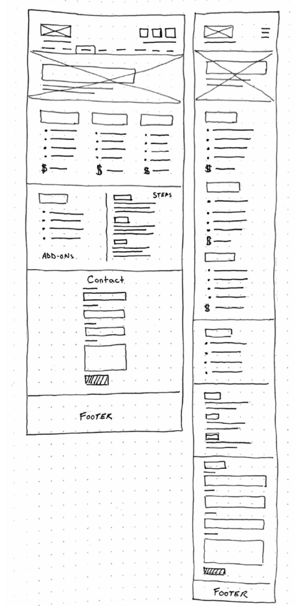

Marlton Field House Website Redesign
Project Overview
The Marlton Field House is among the best indoor turf and court facilities in South Jersey. Their website, on the other hand, did not reflect this. A thorough redesign was in place to elevate the content, user interface and experience to match the facility's high standard of excellence.
Link to Adobe Xd desktop prototype Link to Adobe Xd mobile prototypeObjectives
Content and Writing
Example from "Rentals" page
Original Design

New Design

Explanation
One of the biggest user complaints was the lack of useful information. After reorganizing the rental content into four sections, I added previously missing rental information such as auditorium capacity.
Wireframes
Visual Design
Example from "Birthday Parties" page
Original Design
New Design

Explanation
In the original design there was a lot of center aligned text, which was hard to read. There was also an excessive amount of negative space in some places. After organizing the content, and utilizing good design principles I was able to achieve a more efficient and beautiful layout.
Wireframes
Reflection
I think the project turned out great, however my process was far from efficient and thorough.
The wireframes proved successful as I did not change much after testing. However, designing the user interface proved difficult. I did not decide on type sizes for headings, captions and paragraphs at the outset and it proved difficult to make any changes across 22 pages.
It is easy to jump ahead and skip steps that you think aren't necessary, but it proves to be a terribly inefficient way to design. I learned how even a thorough plan can leave out steps that should be taken but are forgotten or ignored.
After this project I feel a little more confident in my ability to design effective solutions for user pain points and to manage a project and keep it on pace.